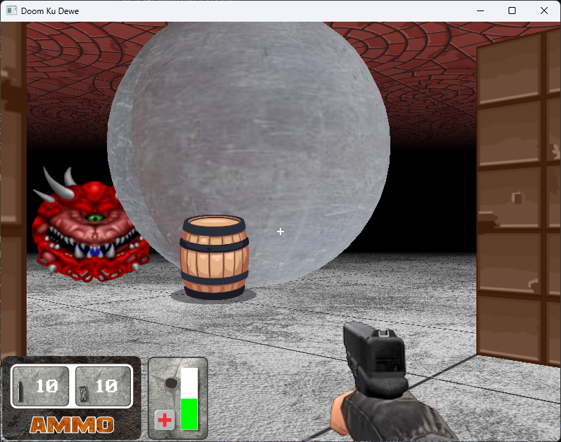

GL-FPS Core Engine
A high-performance, modular 3D engine built entirely from scratch using C++, GLUT, and STB. Crafted by Yohanes Oktanio.

1. Installation & Build Guide
This project uses CMake to ensure cross-platform compatibility. It requires a C++17 compiler.
VS Code Quick Setup (Recommended)
The fastest way to build using the integrated terminal. Works on Windows, Linux, and macOS.
- Open the project folder in VS Code.
- Open the terminal (
Ctrl + `). - Run the following standard CMake sequence:
# Create and enter build directory
mkdir build
cd build
# Generate build files
cmake ..
# Compile the project
cmake --build .Note: On Windows, this will use the MSVC compiler by default if Visual Studio is installed.
2. Detailed File Reference
Every file is modularized to separate concerns between Rendering, Physics, and Asset Management.
The Lifecycle Controller
The entry point. It handles the "Heartbeat" of the engine via GLUT callbacks.
init(): Enables OpenGL features like Fog, Alpha Blending, and Depth Testing. It also triggers the bulk texture loading.reshape(): Critical function that maintains the 4:3 target aspect ratio using "Letterboxing" techniques.idle(): The high-frequency loop that callsupdatePlayer()and requests a redraw.
The Central State
Uses the extern pattern to share state across files without circular dependencies.
// globals.h
extern float camX, camY, camZ; // Camera pos
extern bool keys[256]; // Input state
extern GLuint FloorTexture; // GPU handleThe Physics Engine
Handles Delta-Time based movement and AABB Collision detection.
- Collision: It checks potential
nextXandnextZagainst all world objects before allowing the camera to move. - Animation: Manages the
shotTimeandimage_indexto drive weapon sprites.
The Graphics Pipeline
Implements Fixed-Function Pipeline rendering. It is responsible for the transition between 3D world space and 2D UI space.
GL_PROJECTION is swapped between gluPerspective (3D) dan gluOrtho2D (2D HUD).
3. Core Logic Breakdown
AABB Collision Detection
The engine uses a simple but effective Axis-Aligned Bounding Box check. In player.cpp, the player is treated as a cylinder with radius pr.
bool checkAllCollisions(float x, float y, float z) {
float pr = 0.5f; // Player radius
// Check against blocks, cylinders, and ellipsoids
if (d3d_collision_block(x, y, z, pr, x1, y1, z1, x2, y2, z2)) return true;
return false;
}Texture Mapping via STB
Located in loader.cpp. We bypass standard OS libraries and use stb_image.h to load raw pixel data directly into OpenGL textures.
4. Implementation Examples
How to expand the game with new content.
Example A: Adding a new Wall
Open src/renderer.cpp and find drawWorld(). Add a d3d_draw_wall call:
// Params: x1, y1, z1, x2, y2, z2, textureID, hRepeat, vRepeat
d3d_draw_wall(-10, 0, -10, 10, 10, -10, WallTexture, 4, 1);Example B: Adding a new Global Flag
1 Add extern int myScore; to src/globals.h.
2 Add int myScore = 0; to src/globals.cpp.
3 Update the score in player.cpp when an action occurs.
Example C: Loading a New Texture
In main.cpp, inside the init() function:
GLuint MyNewTexture = loadTexture("../assets/my_image.png");5. Integrated Libraries
This project relies on lightweight, header-only libraries to maintain its "No-Engine" status.
| Library | Role | File Location |
|---|---|---|
| stb_image | Image decoding (PNG, JPG, BMP) | libs/stb_image.h |
| stb_truetype | TTF Font rasterization | libs/stb_truetype.h |
| d3d | Custom 3D primitive drawing | libs/d3d/d3d.cpp |
| freeglut | Windowing & Context management | libs/freeglut/ |